STA2111 Statistika & Analisis Data
Penjelasan lengkap untuk Ujian Tengah Semester — 6 bab inti dari Konsep Dasar Statistika sampai Rancangan Percobaan, plus 10 soal Bagian C (Menjodohkan + alasan) dan 1 soal hitungan end-to-end. Semua materi dirangkum dari 6 PDF kuliah STA2111 + smartstat.info.
Konsep Dasar Statistika
Pasti Keluar B/SStatistika adalah cabang ilmu matematika terapan yang berfokus pada cara mengumpulkan, mengukur, mengklasifikasi, menghitung, menjelaskan, menganalisis, dan menafsirkan data secara sistematis. Tujuan utamanya: mengubah data mentah menjadi informasi yang bisa dipakai untuk pengambilan keputusan. Statistika bukan sekadar "ngitung angka" — ia meliputi seluruh siklus: produksi data → peringkasan → eksplorasi → analisis → interpretasi.
Data ada di mana-mana — setiap aktivitas manusia, institusi, dan negara memproduksi data. Tanpa kemampuan mengolahnya, data hanya jadi tumpukan angka. Alat yang dipakai untuk mengubah data menjadi informasi adalah statistika.
1.1 Statistika vs Statistik vs Parameter
Tiga istilah yang sering tertukar. Bedakan dari tanda akhir huruf dan sumber datanya:
| Istilah | Definisi | Contoh |
|---|---|---|
| Statistika | Ilmu/cabang disiplin — kumpulan teori & metode mengolah data | "Statistika deskriptif dipakai untuk merangkum data sensus." |
| Statistik | Nilai/bilangan yang dihitung dari sampel | Rata-rata sampel x̄, simpangan baku sampel s |
| Parameter | Nilai/bilangan yang menggambarkan populasi | Rata-rata populasi μ, varians populasi σ² |
1.2 Populasi vs Sampel
Populasi adalah keseluruhan objek/subjek yang menjadi pusat perhatian penelitian (bisa manusia, hewan, tumbuhan, gejala, nilai, peristiwa). Sampel adalah bagian dari populasi yang dipilih dengan aturan tertentu sehingga dapat mewakili karakteristik populasi.
- Populasi = himpunan seluruh objek yang ingin dipelajari. Contoh: "Seluruh mahasiswa IPB angkatan 2024."
- Sampel = subset terpilih dari populasi. Contoh: "200 mahasiswa IPB angkatan 2024 yang dipilih acak."
- Sampling frame = daftar unit populasi yang bisa dijadikan basis penarikan sampel (mis. daftar NIM).
- Sampel representatif = sampel yang karakteristiknya mencerminkan populasi.
- Sampel diambil karena: (1) populasi terlalu besar/sensus tidak mungkin; (2) biaya & waktu terbatas; (3) pengukuran destruktif (mis. uji kualitas produk).
1.3 Jenis Data & Skala Pengukuran
Bagi data berdasarkan sifatnya: kualitatif (kategori/label) atau kuantitatif (angka terukur). Lalu tentukan skala pengukurannya:
| Kategori | Sub-jenis | Skala | Contoh |
|---|---|---|---|
| Kualitatif (berupa kategori/label) | Nominal | Hanya label, tidak ada urutan | Agama, jenis kelamin, warna mata, jurusan |
| Ordinal | Ada urutan/rangking, jarak antar nilai tidak setara | Tingkat kepuasan (kecewa → puas → sangat puas), peringkat kelas, tingkat pendidikan | |
| Kuantitatif (berupa angka terukur) | Diskrit | Hasil menghitung, bilangan bulat | Jumlah anak, jumlah mahasiswa, banyaknya mobil |
| Kontinu | Hasil mengukur, bisa pecahan | Tinggi badan, berat, suhu, waktu, pendapatan |
1.4 Statistika Deskriptif vs Inferensial
- Statistika deskriptif — merangkum & menyajikan data yang sudah dikumpulkan (tabel, grafik, mean, median, dst). Tidak menarik kesimpulan tentang populasi yang lebih besar.
- Statistika inferensial — menarik kesimpulan tentang populasi berdasarkan sampel (misalnya estimasi parameter dan uji hipotesis), dengan ketidakpastian yang dinilai menggunakan model/asumsi statistik yang sesuai.
1.5 Variabel & Skala Pengukuran Stevens
Variabel = karakteristik/atribut objek yang nilainya berbeda-beda antar objek. Variate = nilai konkret dari variabel pada satu objek. Data = kumpulan nilai yang diperoleh dari pengukuran/penghitungan suatu variabel.
Empat skala pengukuran Stevens (dari paling sederhana ke paling kaya informasi):
| Skala | Sifat | Operasi yang Valid | Contoh |
|---|---|---|---|
| Nominal | Hanya label, tidak ada urutan | =, ≠ (sama/tidak) | Jenis kelamin, agama |
| Ordinal | Ada urutan, jarak tidak setara | =, ≠, <, > (lebih besar/kecil) | Tingkat pendidikan, peringkat |
| Interval | Urutan + jarak setara, TANPA nol mutlak | =, ≠, <, >, +, − (tambah/kurang) | Suhu Celsius (0°C ≠ "tidak ada panas"), tahun kalender |
| Rasio | Urutan + jarak + nol mutlak = tidak ada nilai | =, ≠, <, >, +, −, ×, ÷ (semua operasi) | Berat badan (0 kg = tidak ada berat; 40 kg = 2× 20 kg), pendapatan, umur |
Penyajian Data
Sering di Bagian CSetelah data dikumpulkan, kita perlu menyajikannya agar pola dan informasi penting mudah dilihat. Penyajian ada dua bentuk: tabular (tabel) dan grafis (diagram). Pilihan bentuk bergantung pada jenis data — kategorik atau numerik. Prinsipnya: "Kenali dulu tipe datanya, baru tentukan skala pengukurannya. Dari situlah analisis yang tepat dimulai."
2.1 Tabel Distribusi Frekuensi (TDF)
TDF dipakai untuk merangkas data numerik kontinu ke dalam beberapa kelompok (kelas) sehingga pola sebarannya tampak. Komponen wajib dihafal:
| Komponen | Definisi | Rumus / Aturan |
|---|---|---|
| Kelas (Class) | Interval yang membagi rentang data | Banyaknya kelas k = 1 + 3,322 log10(n) (aturan Sturges) |
| Panjang Kelas | Lebar tiap kelas (boleh sama/beda) | i = (Xmax − Xmin) / k, dibulatkan ke atas |
| Batas Kelas (Class Limit) | Batas bawah & atas inklusif | Mis. 60–69, 70–79 (kedua ujung termasuk) |
| Tepi Kelas (Class Boundary) | Batas sesungguhnya untuk data kontinu | BB − 0,5; BA + 0,5. Mis. 59,5–69,5, 69,5–79,5 |
| Titik Tengah (Class Mark) | Nilai tengah kelas, dipakai untuk hitungan | xi = (BB + BA) / 2 |
| Frekuensi (fi) | Banyak data yang jatuh ke kelas ke-i | Diambil dari data mentah |
| Frekuensi Relatif | Proporsi frekuensi kelas terhadap total | frel = fi / n × 100% |
| Frekuensi Kumulatif | Jumlah frekuensi sampai kelas ke-i | Untuk ogive (≤ / ≥) |
Langkah-Langkah Membuat TDF (Manual, dari data mentah)
- Urutkan data dari kecil ke besar.
- Hitung Jangkauan (Range) = max − min. Mis. max=58, min=12 → R=46.
- Pilih jumlah kelas (k), biasanya antara 5–15. Bisa pakai Sturges.
- Hitung Lebar Kelas (i) = R / k, dibulatkan ke atas. Mis. 46/5 = 9,2 → 10.
- Tentukan Batas Kelas: mis. 10≤x<20, 20≤x<30, dst. (atau 10–19, 20–29 untuk integer).
- Tempatkan data pada kelasnya masing-masing. Hitung frekuensi tiap kelas.
2.2 Diagram untuk Data Kategorik
| Diagram | Waktu Pakai | Ciri Khas |
|---|---|---|
| Bar Chart (Diagram Batang) | Kategorik nominal/ordinal, bandingkan frekuensi antar kategori | Tinggi batang = frekuensi. Kategori terpisah (ada gap). |
| Pie Chart (Diagram Lingkaran) | Kategorik, total 100%, kategori ≤ 5–7 | Sudut potongan = (fi/n) × 360°. Cocok untuk proporsi. |
| Pareto Chart | Ingin lihat "vital few vs trivial many" | Bar chart diurutkan dari frekuensi tertinggi + garis kumulatif (%) |
| Line Chart (Diagram Garis) | Data deret waktu (time series), ingin lihat tren | Titik-titik dihubungkan garis. Sumbu-X = waktu. |
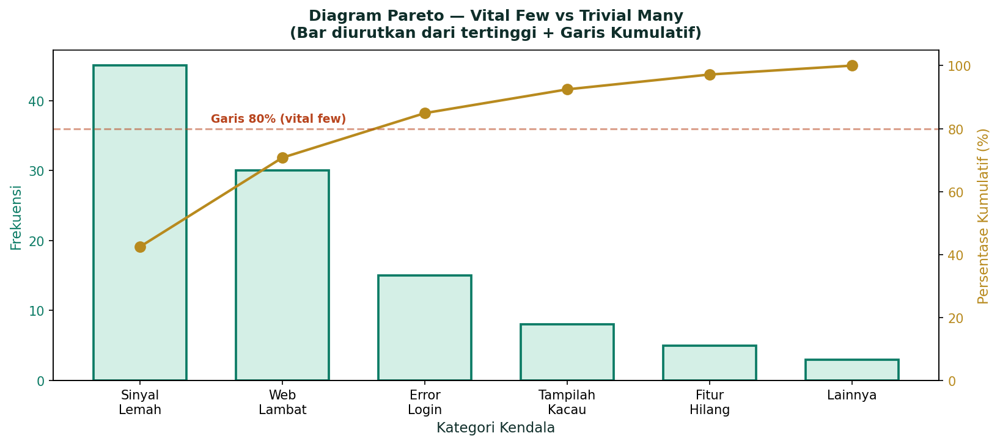
2.3 Diagram untuk Data Numerik
| Diagram | Waktu Pakai | Ciri Khas |
|---|---|---|
| Histogram | Data numerik kontinu yang dikelompokkan ke TDF | Tinggi batang = frekuensi. Batang menempel (tanpa gap). Sumbu-X = tepi kelas. |
| Poligon Frekuensi | Lihat pola sebaran sebagai garis lengkung | Garis yang menghubungkan titik tengah tiap kelas. Untuk banding 2+ distribusi. |
| Ogive | Lihat frekuensi kumulatif (≤ / ≥) | Garis S-shaped. Sumbu-X = tepi kelas, sumbu-Y = frekuensi kumulatif. |
| Boxplot | 5-statistik + deteksi pencilan | Dibahas detail di Bab 4. |
| Stem-and-Leaf | Data mentah kecil, ingin lihat sebaran + nilai asli | Bagi angka jadi stem (puluhan) + leaf (satuan). Detail di sub 2.5. |
| Scatter Plot | Hubungan 2 variabel numerik + deteksi pencilan multivariat | Sumbu-X = var 1, sumbu-Y = var 2. Detail di Bab 4. |
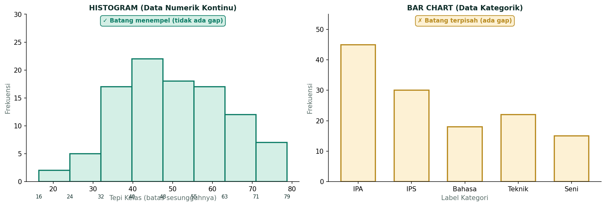
2.4 Cross Tabulation (Tabel Kontingensi)
Tabel silang yang memuat jumlah amatan dua variabel kategorik sekaligus. Disebut tabel r × c jika ada r baris (kategori var 1) dan c kolom (kategori var 2). Contoh: baris = jenis kelamin (L/P), kolom = fakultas (5) → tabel 2 × 5.
2.5 Stem-and-Leaf Diagram (Diagram Dahan-Daun)
Untuk data mentah berjumlah kecil (≤ 50), stem-and-leaf menampilkan sebaran data sekaligus nilai aslinya. Cara buat:
- Pisahkan tiap nilai jadi stem (bagian depan, mis. puluhan) dan leaf (bagian belakang, mis. satuan).
- Daftar stem secara vertikal, urut naik, dengan garis pemisah "|".
- Tulis leaf tiap nilai di baris stem yang sesuai, urut naik, dipisah spasi.
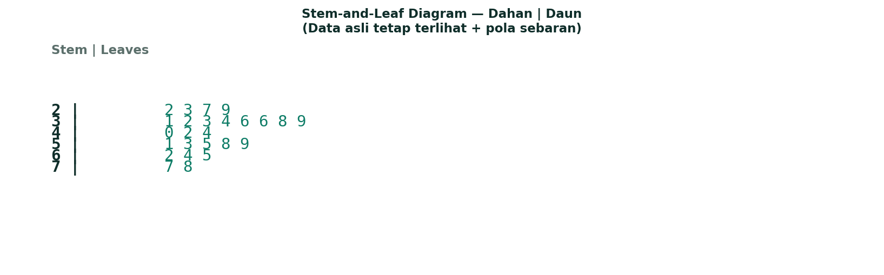
Peringkasan Data
Paling Sering DitesPeringkasan data = ringkas ratusan/ribuan angka menjadi beberapa nilai kunci yang tetap menggambarkan pola sebaran. Tiga aspek yang wajib diringkas: pemusatan (di mana data berkumpul), penyebaran (berapa lebar data menyebar), dan bentuk distribusi (simetris, miring ke kiri/kanan).
3.1 Ukuran Pemusatan (Central Tendency)
| Ukuran | Rumus | Kapan Dipakai |
|---|---|---|
| Mean (rata-rata) | x̄ = Σxi / n | Data simetris, tidak ada pencilan ekstrim. Sensitif outlier. |
| Median | Nilai tengah setelah urut | Data miring/ada pencilan. Robust terhadap outlier. |
| Modus | Nilai paling sering muncul | Data kategorik atau diskrit berulang. |
| Weighted Mean | x̄w = Σ(wi·xi) / Σwi | Data diberi bobot berbeda (mis. IPK dengan SKS). |
Cari Median — Langkah
- Urutkan data dari kecil ke besar.
- Jika n ganjil: median = data ke-(n+1)/2.
- Jika n genap: median = rata-rata data ke-n/2 dan (n/2 + 1).
Kuartil (Q1, Q2, Q3)
Kuartil membagi data terurut menjadi 4 bagian sama besar. Q2 = median. Q1 = median paruh bawah, Q3 = median paruh atas.
- Posisi Q1: nQ1 = (n+1)/4
- Posisi Q2: nQ2 = (n+1)/2
- Posisi Q3: nQ3 = 3(n+1)/4
3.2 Ukuran Penyebaran (Dispersion)
| Ukuran | Rumus | Arti |
|---|---|---|
| Range (R) | R = Xmax − Xmin | Sensitif outlier, hanya pakai dua nilai ekstrem. |
| Interquartile Range (IQR) | IQR = Q3 − Q1 | Lebar 50% data tengah. Robust terhadap outlier. |
| Varians Sampel (s²) | s² = Σ(xi − x̄)² / (n − 1) | Rata-rata kuadrat simpangan. Pembagi n−1 agar tidak bias. |
| Varians Populasi (σ²) | σ² = Σ(xi − μ)² / N | Pembagi N, dipakai jika data = populasi (bukan sampel). |
| Simpangan Baku Sampel (s) | s = √s² | Akar varians, satuannya sama dengan data asli. |
| Koefisien Variasi (CV) | CV = (s / x̄) × 100% | Penyebaran relatif, banding antar skala berbeda. |
| Koragam (Koefisien Keragaman) | CV juga bisa = (s / x̄) × 100% | padan CV, satuan persen. |
3.3 Ukuran Kemiringan (Skewness)
Skewness = ukuran ketidaksimetrisan distribusi. Arah kemiringan ditentukan oleh ekor distribusi yang lebih panjang.
| Tipe | Bentuk | Hubungan Mean vs Median vs Modus | Contoh Nyata |
|---|---|---|---|
| Skewness Positif (right-skewed) | Ekor ke kanan, data menumpuk di kiri | Mean > Median > Modus | Pendapatan (Income) — sedikit orang kaya di ekor kanan panjang |
| Simetris | Kiri-kanan sama | Mean ≈ Median ≈ Modus | IQ — distribusi normal |
| Skewness Negatif (left-skewed) | Ekor ke kiri, data menumpuk di kanan | Mean < Median < Modus | Life Span (masa hidup) — sedikit orang meninggal muda di ekor kiri |
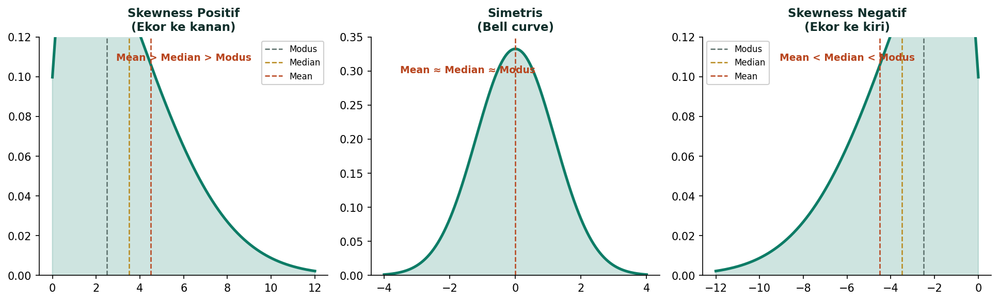
Eksplorasi Data (EDA)
Sering di MenjodohkanEksplorasi data (EDA) = langkah awal mengenal pola data sebelum analisis formal. Dikembangkan oleh John Tukey (1960-an, Princeton) yang prihatin para statistisi terlalu menekankan analisis kompleks dan mengabaikan cara sederhana untuk memeriksa data. Tukey merintis metode deskriptif baru dengan judul Exploratory Data Analysis.
Tiga alat utama EDA: Boxplot, Histogram, dan Scatter Plot. EDA dilakukan dengan memvisualisasikan data — pola yang sulit terlihat dari tabel angka akan jelas di grafik.
4.1 Five-Number Summary
Lima nilai kunci yang merangkum distribusi data:
- Minimum — nilai terkecil data.
- Q1 — kuartil pertama (25% data di bawah ini).
- Median (Q2) — nilai tengah (50% di bawah, 50% di atas).
- Q3 — kuartil ketiga (75% data di bawah ini).
- Maximum — nilai terbesar data.
Range = Max − Min. IQR = Q3 − Q1. Boxplot memvisualkan kelima nilai ini sekaligus.
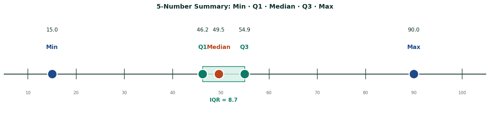
4.2 Boxplot (Diagram Kotak Garis)
Boxplot dibangun dari 5-number summary. Strukturnya:
- Kotak membentang dari Q1 ke Q3 (lebar = IQR).
- Garis median di dalam kotak (bisa di tengah, bisa geser).
- Whisker (garis bawah) dari Q1 ke "data terkecil dalam batas" — bukan selalu minimum!
- Whisker (garis atas) dari Q3 ke "data terbesar dalam batas".
- Pencilan digambar sebagai titik/asterisk di luar whisker.
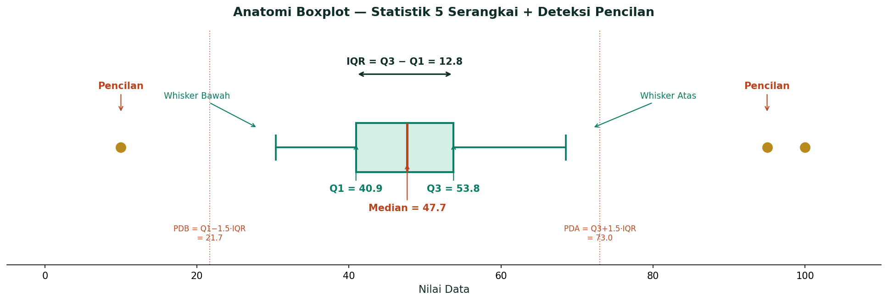
Langkah Buat Boxplot
- Hitung Min, Q1, Median, Q3, Max.
- Hitung IQR = Q3 − Q1.
- Hitung PDB = Q1 − 1,5·IQR dan PDA = Q3 + 1,5·IQR.
- Tandai data di luar [PDB, PDA] sebagai pencilan (asterisk).
- Tarik whisker bawah dari Q1 ke data terkecil yang ≥ PDB.
- Tarik whisker atas dari Q3 ke data terbesar yang ≤ PDA.
- Gambar kotak Q1–Q3 + garis median di dalamnya.
4.3 Pencilan: Univariat vs Multivariat
Pencilan (outlier) = nilai ekstrem yang jauh dari pola utama data. Dua jenis:
- Pencilan Univariat — terlihat saat periksa satu variabel saja (mis. nilai 100 dari rentang 0–50). Terdeteksi via boxplot satu variabel.
- Pencilan Multivariat — tidak terlihat di boxplot satu variabel, tapi terlihat saat kombinasi 2+ variabel. Contoh: tinggi 160 cm & berat 100 kg — di boxplot tinggi tidak ada pencilan (normal), di boxplot berat tidak ada pencilan (normal), tapi di scatter plot tinggi-vs-berat, kombinasi ini pencilan (berat terlalu besar untuk tinggi segitu).
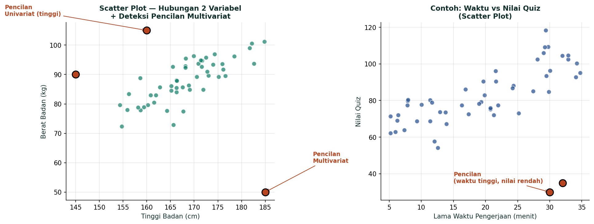
4.4 Pola Sebaran: Unimodal vs Bimodal
Saat lihat histogram, perhatikan: (1) Apakah ada satu atau dua puncak? (2) Apakah simetris atau menjulur (skewed)? (3) Apakah ada nilai ekstrem?
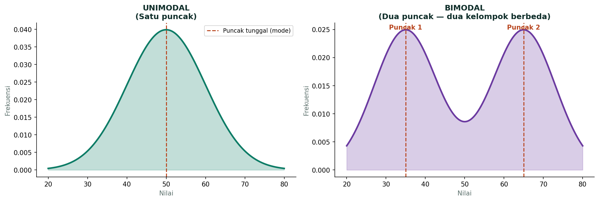
- Contoh skewness ke kiri (mean < median): Life Span (masa hidup) — sedikit orang meninggal muda, ekor kiri panjang.
- Contoh simetris (mean ≈ median): IQ — bell curve normal.
- Contoh skewness ke kanan (mean > median): Income (pendapatan) — sedikit orang kaya di ekor kanan panjang.
4.5 Eksplorasi Perbandingan Antar Grup
Untuk membandingkan distribusi 2+ grup, gunakan boxplot side-by-side atau histogram overlay. Boxplot sangat efisien untuk ini karena menampilkan 5-statistik tiap grup sekaligus.
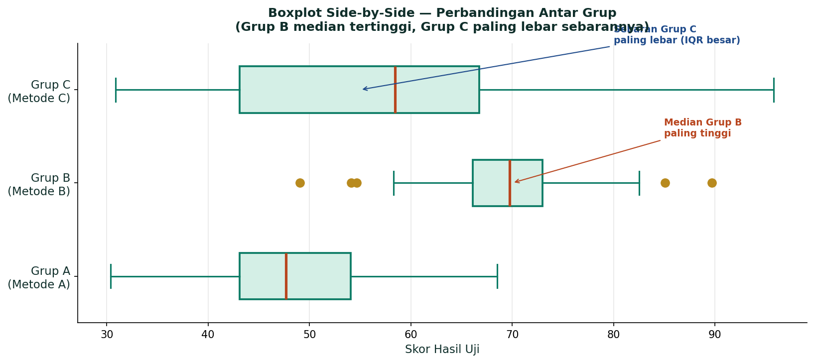
Metode Survei
KonseptualSurvei = metode pengumpulan data dari sampel populasi untuk menjawab tujuan penelitian, biasanya dengan kuesioner/angket atau wawancara terstruktur. Survei berbeda dengan observasi (mengamati tanpa intervensi) dan eksperimen (membangkitkan data dengan perlakuan).
5.1 Definisi & Tahapan Survei
Tiga komponen wajib survei: Definisi (apa yang diteliti), Tujuan (untuk apa), Instrumen (alat ukur, biasanya kuesioner). Tahapan:
- Rumuskan pertanyaan penelitian.
- Definisikan populasi relevan.
- Pilih metode sampling (probability / non-probability).
- Cari sampling frame (daftar unit populasi).
- Desain kuesioner yang valid & reliable.
- Lakukan survei lapangan.
- Olah & analisis data, tarik kesimpulan.
5.2 Sepuluh Metode Penarikan Contoh (Sampling)
Dua kategori utama: Probability Sampling (berpeluang, hasil dapat digeneralisir ke populasi) dan Non-Probability Sampling (tidak berpeluang, tidak digeneralisir). Total 10 teknik (5 + 5):
| Probability Sampling (Acak, Dapat Digeneralisir) | Non-Probability Sampling (Tidak Acak, Tidak Digeneralisir) |
|---|---|
| 1. SRS — Acak Sederhana, populasi homogen | 1. Voluntary — Sukarela, responden mendaftar sendiri |
| 2. Systematic — Acak Sistematis, populasi terurut (interval k) | 2. Quota — Berkuota, mengikuti kuota tiap kelas |
| 3. Stratified — Acak Bertingkat, populasi berkelas | 3. Accidental/Convenience — Kebetulan, siapa yang ditemui |
| 4. Cluster — Acak Bergerombol, populasi bergerombol | 4. Purposive — Sengaja, memenuhi kriteria tertentu |
| 5. Multistage — Berperingkat, cakupan luas | 5. Snowball — Bola Salju, rujukan berantai antar responden |
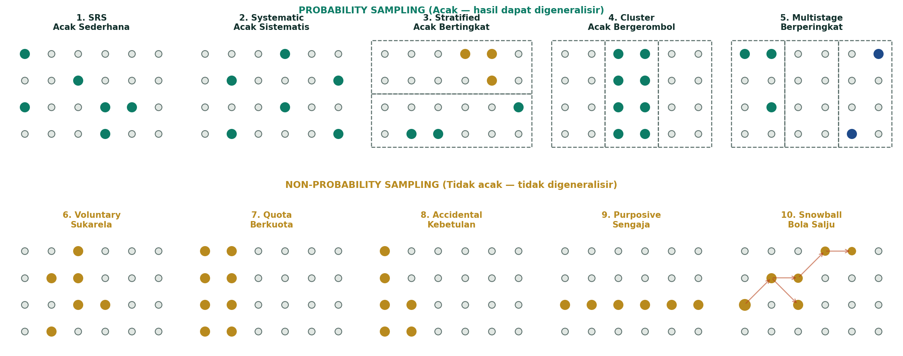
Detail 4 Probability Sampling Utama
| Metode | Cara | Kapan Cocok | Kelebihan / Kekurangan |
|---|---|---|---|
| SRS | Tarik unit langsung dari daftar populasi | Populasi homogen, sampling frame lengkap | + Sederhana, tidak bias. − Butuh sampling frame; bisa tidak proporsional kalau heterogen. |
| Stratified | Bagi populasi jadi strata (homogen-dalam), SRS di tiap stratum | Populasi heterogen dengan subkelompok jelas | + Presisi tinggi, semua stratum terwakili. − Butuh info stratum di sampling frame. |
| Cluster | Bagi populasi jadi klaster (heterogen-dalam), acak klaster, survei semua unit di klaster terpilih | Populasi tersebar luas, survei langsung tiap unit mahal | + Praktis & murah untuk geografis besar. − Variansi antar klaster bisa tinggi. |
| Systematic | Pilih unit ke-k, k+interval, k+2·interval dari daftar acak | Daftar populasi berurutan, tidak ada pola periodik | + Mudah di lapangan. − Berbahaya kalau ada pola periodik yang kena interval. |
5.3 Sampling Error vs Non-Sampling Error
Total error = Sampling Error + Non-Sampling Error. Sampling error bisa dikecilkan dengan menambah ukuran sampel. Non-sampling error TIDAK bisa diatasi dengan menambah sampel — harus diperbaiki di desain/pelaksanaan.
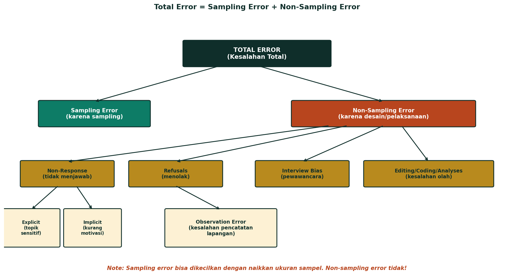
| Tipe | Definisi | Contoh |
|---|---|---|
| Sampling Error | Selisih nilai sampel vs populasi karena kita ambil sampel, bukan sensus penuh | Estimasi rata-rata sampel 165 cm, populasi 167 cm. Selisih 2 cm. |
| Non-Sampling Error (Bias) | Selisih yang muncul BUKAN karena sampling, melainkan kesalahan desain/pelaksanaan | Kuesioner ambigu, responder tidak jujur, sampling frame tidak lengkap, salah input, non-response. |
5.4 Kuesioner yang Baik — 4 Syarat + 5 Bagian
Informasi yang didapat dari kuesioner HARUS memenuhi 4 syarat:
| Syarat | Definisi | Contoh Kegagalan |
|---|---|---|
| 1. Valid | Mengukur yang seharusnya diukur | Pertanyaan "jam berapa Anda tidur?" untuk mengukur kualitas tidur — tidak valid (tidak menangkap kedalaman/gangguan tidur) |
| 2. Reliable | Mengukur dengan konsisten (kalau diulang, hasil mirip) | Timbangan yang sering berubah-ubah angkanya |
| 3. Unbiased | Tidak bias dalam mengukur | Responden dikira-kira jawabannya (mis. jumlah pupuk setahun lalu) |
| 4. Discriminating | Dapat membedakan karakteristik antar responden | Pertanyaan yang semua orang jawab "ya" → tidak membedakan |
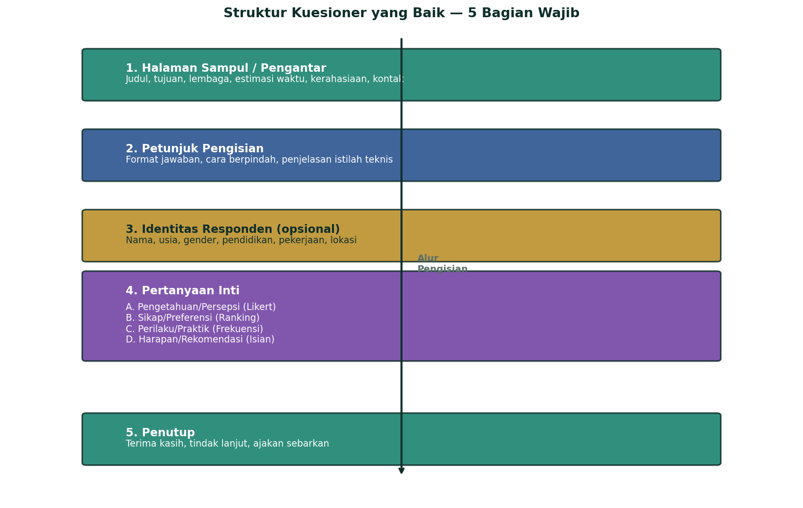
Perancangan Percobaan
KonseptualEksperimen = studi yang sengaja memberi perlakuan kepada unit percobaan untuk mengamati respons. Tujuan eksperimen: mengetahui hubungan sebab-akibat antara perlakuan dan respons (bukan korelasi saja).
6.1 Perbedaan Percobaan vs Survei
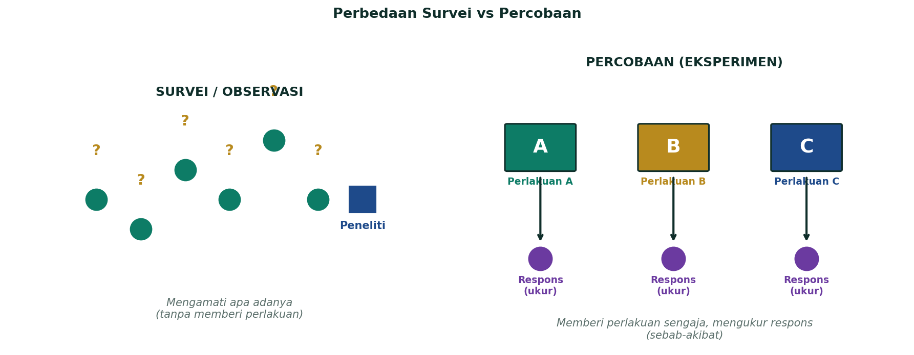
6.2 Terminologi Wajib & 3 Prinsip Dasar
| Istilah | Definisi |
|---|---|
| Perlakuan (Treatment) | Kondisi/faktor yang sengaja diberikan. Mis. pupuk A, B, C. |
| Unit Percobaan | Objek terkecil yang menerima perlakuan. Mis. satu petak tanaman. |
| Ulangan (Replication) | Jumlah unit yang menerima perlakuan sama. Mis. 3 ulangan = tiap perlakuan ke 3 unit. |
| Respons (Response) | Variabel yang diukur sebagai hasil. Mis. hasil panen (kg/ha). |
| Faktor (Factor) | Variabel bebas yang dikendalikan peneliti. Mis. pupuk, varietas, dosis. |
| Taraf (Level) | Nilai/kategori dari faktor. Mis. taraf pupuk A, B, C. |
| Prinsip | Definisi | Tujuan |
|---|---|---|
| 1. Pengacakan (Randomization) | Setiap unit punya peluang sama untuk mendapat perlakuan tertentu | Jaga agar faktor pengganggu (unknown) tersebar merata & tidak terkait dengan perlakuan |
| 2. Ulangan (Replication) | Penerapan tiap perlakuan ke beberapa unit percobaan (≥2) | Estimasi ragam galat (untuk uji statistik), naikkan presisi |
| 3. Pengendalian Lokal (Local Control) | Mengelompokkan unit ke kelompok homogen (block) sebelum pengacakan | Mengurangi variabilitas galat → presisi naik. Prinsip RAKL. |
6.3 RAL vs RAKL vs RBSL
Penamaan rancangan didasarkan pada rancangan perlakuan (Faktor Tunggal / Faktorial / Split Plot) × rancangan lingkungan (RAL / RAKL / RBSL). Untuk faktor tunggal, 3 jenis lingkungan:
| Rancangan | Kapan Dipakai | Struktur | Kelompok? |
|---|---|---|---|
| RAL (Acak Lengkap) | Unit seragam/homogen, tidak ada sumber variasi diketahui | t perlakuan × r ulangan → t·r unit. Acak penuh. | Tidak ada |
| RAKL (Acak Kelompok Lengkap) | Ada 1 arah sumber variasi diketahui (mis. gradien lahan) | t perlakuan × r ulangan dibagi ke r kelompok. Acak DI DALAM kelompok. | Ada (r kelompok) |
| RBSL (Bujur Sangkar Latin) | Ada 2 arah sumber variasi diketahui (mis. gradien + ketinggian) | Perlakuan disusun dalam matriks bujur sangkar. Tiap perlakuan muncul tepat 1× di tiap baris & tiap lajur. | Ada (baris + lajur) |
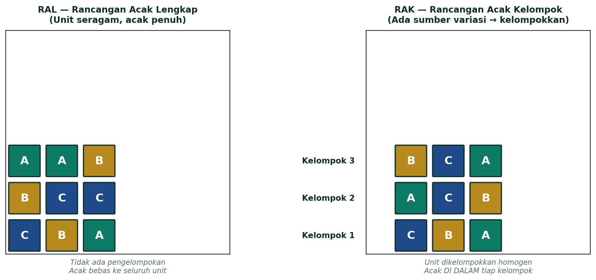
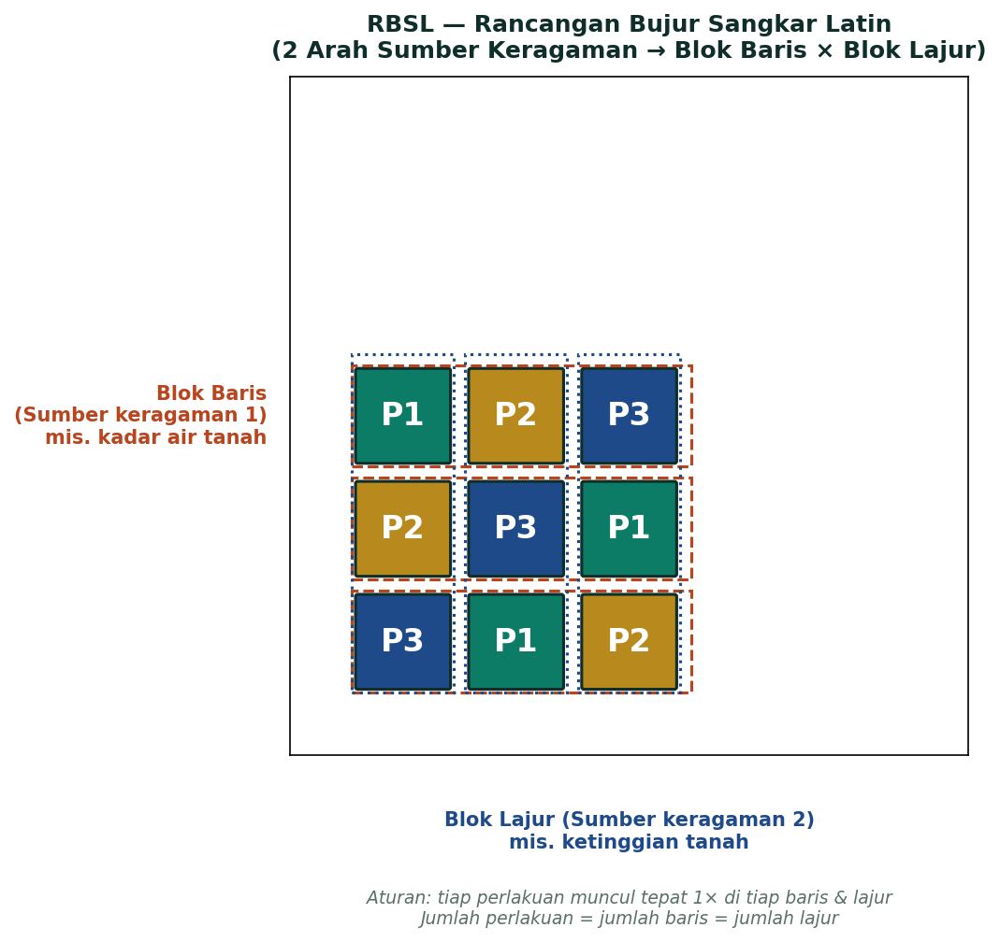
6.4 Faktorial & Split Plot
Jika banyak faktor yang dicobakan lebih dari 1, rancangan perlakuannya meliputi:
- Rancangan Faktorial — pelajari 2+ faktor sekaligus + interaksi antar faktor. Mis. 2 faktor: pupuk (3 taraf) × varietas (2 taraf) = 6 perlakuan × r ulangan → 6r unit. Bisa dikombinasikan dengan RAL/RAKL/RBSL.
- Rancangan Split Plot — untuk faktor yang sulit/tidak mungkin diacak pada unit kecil (mis. pengairan skala lahan besar). Faktor utama pada petak besar (main plot), faktor kedua pada anak petak (subplot).
6.5 Bagan (Lay Out) Percobaan
Bagan percobaan = tata letak perlakuan-perlakuan pada seluruh unit percobaan di lapangan. Tahap umum membangun bagan:
- Beri nomor perlakuan yang dicobakan (1, 2, 3, …, t).
- Persiapkan unit percobaan sebanyak t·r (t perlakuan × r ulangan).
- Beri nomor unit percobaan (1, 2, …, t·r atau penomoran mengikuti rancangan lingkungan).
- Acak perlakuan untuk tiap unit percobaan. Metode: lotere, tabel bilangan acak, software (Excel rand()).
- Catat hasil pengacakan sebagai bagan/denah percobaan.
Latihan Bagian C — Menjodohkan + Alasan
11 SoalFormat Bagian C UTS: 10 soal menjodohkan, masing-masing perlu alasan singkat (1–2 kalimat) yang menjelaskan kenapa pasangan itu benar. Berikut 10 soal latihan + 1 soal hitungan end-to-end.
10 Soal Menjodohkan + Alasan
Soal Hitungan End-to-End (rangkum Bab 2, 3, 4)
45 52 58 62 65 67 68 72 74 75 76 78 80 82 84 86 88 92 95 98
Langkah 1 — 5-Number Summary
- Min = 45
- Q1: posisi = (n+1)/4 = 5,25 → interpolasi: Q1 = 65 + 0,25·(67−65) = 65,5
- Median (Q2): posisi = (n+1)/2 = 10,5 → rata-rata data ke-10 & ke-11 = (75+76)/2 = 75,5
- Q3: posisi = 3(n+1)/4 = 15,75 → interpolasi: Q3 = 84 + 0,75·(86−84) = 85,5
- Max = 98
Langkah 2 — Range, IQR, Pencilan
- Range = 98 − 45 = 53
- IQR = 85,5 − 65,5 = 20
- PDB = 65,5 − 1,5·20 = 35,5 → tidak ada data < 35,5
- PDA = 85,5 + 1,5·20 = 115,5 → tidak ada data > 115,5
- Kesimpulan: tidak ada pencilan.
Langkah 3 — Mean, Varians, Simpangan Baku, CV
- Σx = 1.497 → Mean (x̄) = 1.497/20 = 74,85
- Σ(x−x̄)² = 3.782,55 → Varians sampel (s²) = 3.782,55/19 ≈ 199,08
- Simpangan baku sampel (s) = √199,08 ≈ 14,11
- CV = (14,11/74,85) × 100% ≈ 18,85%. Interpretasi CV bergantung pada konteks; kategori “rendah/sedang/tinggi” tidak universal.
Langkah 4 — Skewness
- Mean = 74,75 < Median = 75,5 → Mean < Median
- Pearson Sk = 3·(74,75 − 75,5)/14,34 ≈ −0,157
- Sk < 0 → skewness negatif lemah (mendekati simetris)
Langkah 5 — Visual Boxplot
Whisker bawah dari Q1 (65,5) ke Min (45). Kotak Q1 (65,5) → Q3 (85,5), garis median di 75,5. Whisker atas dari Q3 ke Max (98). Median sedikit geser ke atas → konsisten dengan skewness negatif lemah.
Langkah 6 — TDF
Sturges: k = 1 + 3,322·log(20) ≈ 5,32 → 6 kelas. Range 53, lebar ≈ 53/6 ≈ 9 → pakai 10:
| Kelas | Batas | Tepi | Titik Tengah | f | frel | fkum |
|---|---|---|---|---|---|---|
| 1 | 45–54 | 44,5–54,5 | 49,5 | 2 | 10% | 2 |
| 2 | 55–64 | 54,5–64,5 | 59,5 | 2 | 10% | 4 |
| 3 | 65–74 | 64,5–74,5 | 69,5 | 5 | 25% | 9 |
| 4 | 75–84 | 74,5–84,5 | 79,5 | 6 | 30% | 15 |
| 5 | 85–94 | 84,5–94,5 | 89,5 | 3 | 15% | 18 |
| 6 | 95–104 | 94,5–104,5 | 99,5 | 2 | 10% | 20 |
Mean berkelompok: x̄ = Σ(fi·xi)/n = (2·49,5 + 2·59,5 + 5·69,5 + 6·79,5 + 3·89,5 + 2·99,5)/20 = 1.510/20 = 75,5 (sedikit berbeda dari mean data mentah 74,85 karena data dikelompokkan dan titik tengah kelas digunakan sebagai pendekatan).